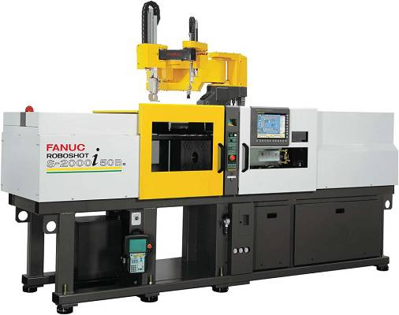
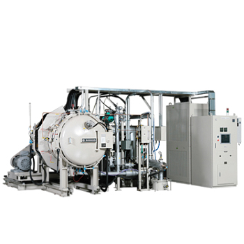

製程能力
日本 FANUC 50 與 100 噸射出成型設備是我們選用的，且結合各種研發的特殊射出成型模具，使用 X-RAY 改善內外部瑕疵，大幅提升生產效率及穩定品質。
燒結爐為日本島津與美國的真空燒結爐，也經過不斷測試及改良條件，已研究出較短的燒結時間並擁有穩定品質。我們持續改善與研究各種 MIM 生產條件，提升技術及能力。
我們擁有不同種類的工具機，鑽床、銑床、車床、磨床、沖床及各式改裝加工設備，因此從成型燒結後的 MIM 素材，能依照產品需求做穩定尺寸控制。
MIM 製造零件可廣泛用於針車、玩具槍、醫療、潛水、電子、汽機車、自行車、機械五金零件等產業。
- 混鍊與造粒
- 射出成型
- 脫脂與燒結
- 整形、鑽孔、攻牙、研磨、車削等後加工
- 尺寸檢查與品質確認

